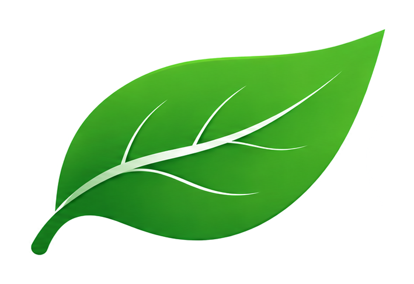

Vos prières et votre ciel, à l'endroit exact où vous êtes.
aljana réunit les horaires de prière, le ciel en direct, la Lune, le Hilal, la Qibla et les éclipses. Chaque valeur est calculée pour votre position, à la seconde.
Application actuellement en bêta privée. Accès réservé aux bêta-testeurs invités.
Nous ne comparons pas aljana à d'autres applications. Nous mesurons l'écart face au ciel lui-même.
0 s
Écart maximal mesuré, contrôlé face à JPL Horizons sur 120 instants de référence.
0 méthodes
Votre pratique, votre réglage : méthodes internationales et choix de l'école pour l'Asr.Méthodes internationales et choix de l’école pour l’Asr.
0 langues
Interface localisée, lecture de droite à gauche comprise.Lecture de droite à gauche comprise.
03 Ciel
Le ciel au-dessus de vous, maintenant.
Une carte orientée sur votre horizon : étoiles, planètes, Lune, Voie lactée. Le mode Œil nu ne garde que ce que vous pouvez vraiment voir.
- Vue en carte ou face à l'horizon
- Liste « À observer » triée par visibilité réelle

CompagnonVotre Compagnon, au quotidien.
Le ciel vous donne les repères. Votre Compagnon vous accompagne dans votre pratique : lecture du Mushaf, dhikr et hadith du jour.
HadithMushafTasbih
Étude de direction artistique. Page de travail, non indexée, non liée à la production.